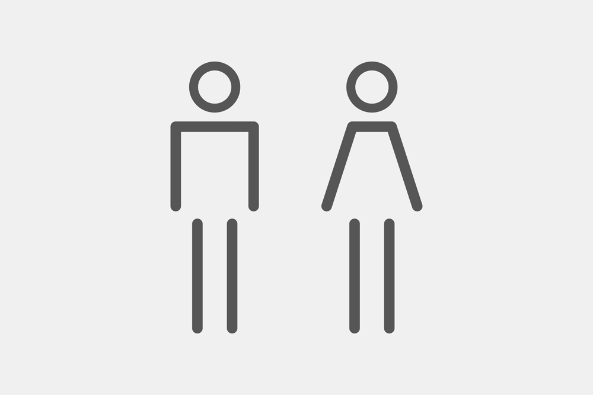
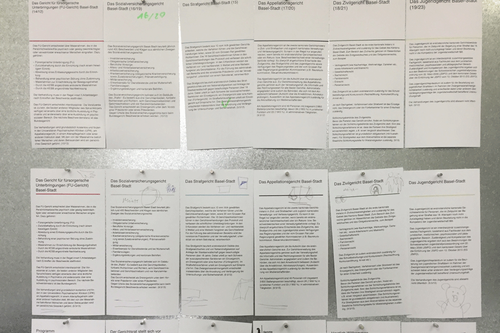
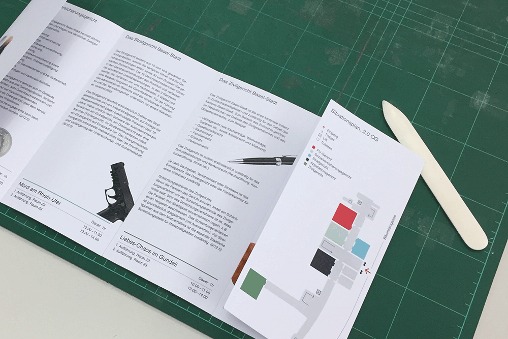
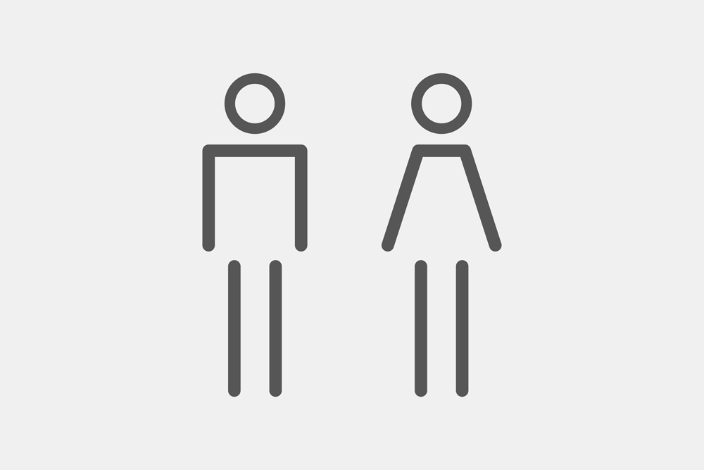
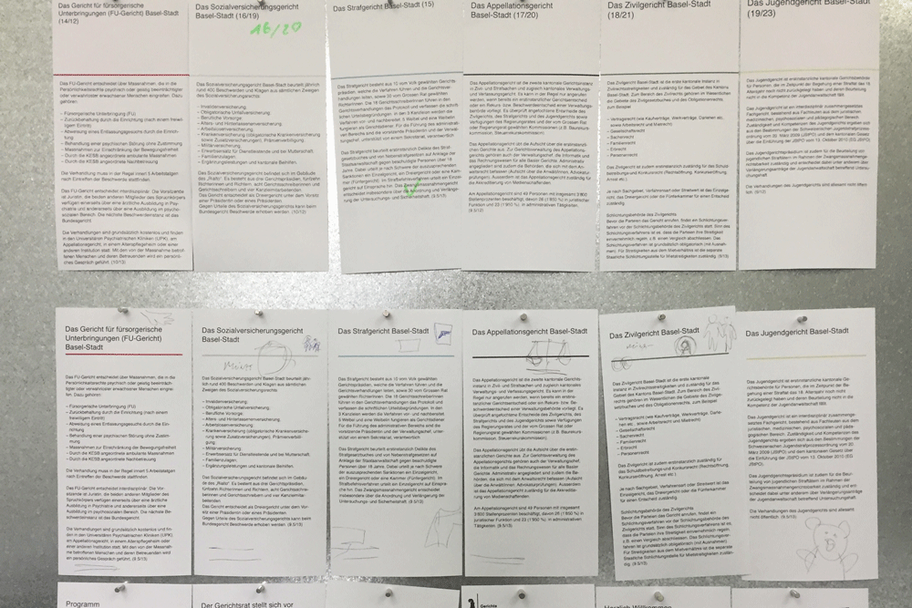
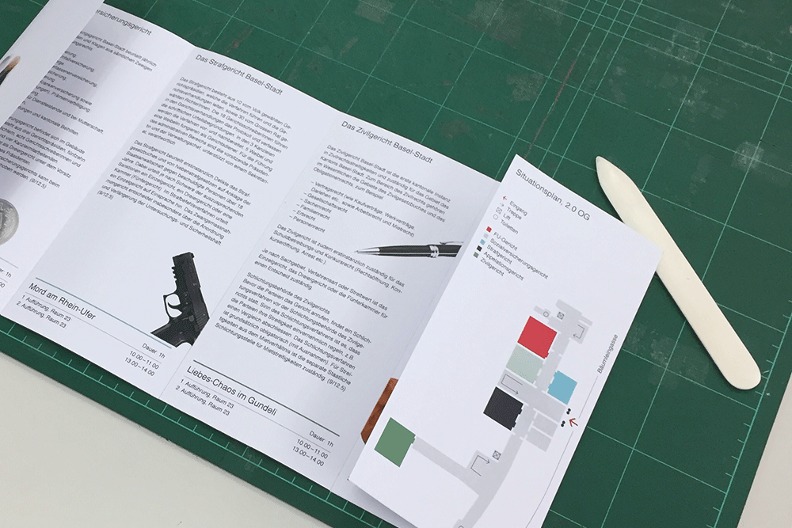

Strafgerichte Basel-Stadt
Konzept, Gestaltung und Umsetzung
Das erste mal in der Geschichte der Basler Strafgerichte
fand ein «Tag der offenen Türe» statt.
Diesem galt es einen visuellen Auftritt zu verleihen.
Sechs Gerichte präsentierten sich am Tag der offenen Tür
einer breiten und vor allem interessierten Öffentlichkeit.
Um die unterschiedlichen Strafgerichte von einander abzuheben,
teilte ich jeder Instanz eine eigene Farbe zu.
Zusammen mit den Gestaltungselementen aus dem Corporate Design der Stadt Basel und dem Farbcode,
gestaltete ich einen einheitlichen und verständlichen Auftritt der Gerichte.
Technische Daten Flyer
Format: 105 x 210 mm
Falz: Zickzackfalz
Druck: cmyk, beidseitig
 




